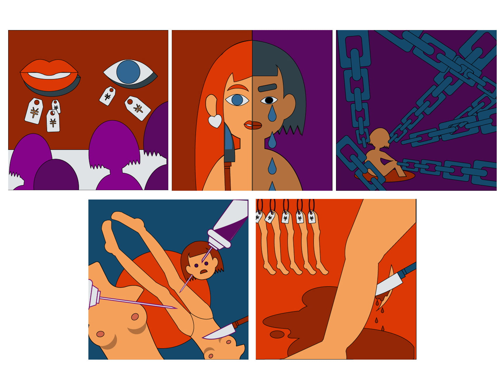
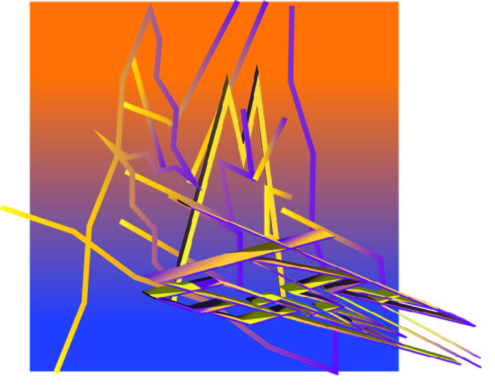

Motion,Interaction & Graphic Design
This is a collection of my creative endeavors crafted with Adobe Creative Suite, TouchDesigner, and p5.js.
Music Video for "Jets"
This project blends music and dynamic visual effects in an immersive and experimental experience using TouchDesigner.
Interactive Retro Camera
Created a joyful 8-bit style with TouchDesigner, this project provides an engaging experience for audiences to delve into childhood memories.
This Wayfinding Project is researching about a concerned social issue, then creating a series of graphics critiquing extreme beauty standards, emphasizing visual storytelling with Adobe Illustrator.

